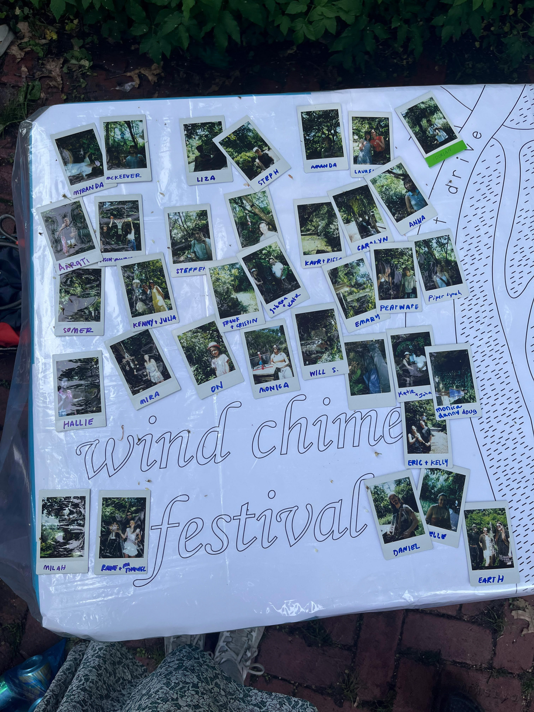

The wind chimes reveal themselves slowly. Beacons tucked into corners, on the next little ridge, up the path, hidden right above your head. You must keep your eyes peeled. Ask questions. Watch the flow of others on their visits and discoveries. The wind chimes and their creators surround you by the very fact of geology in the Vale of Cashmere. The vale is a dip in the earth, a hole created by a glacier melting 17,000 years ago and tearing rock and soil into an arena of blue and green. You walk in the center, around the pond, ringed by trees, braving short distances of sun. Each branch is a potential host. Some chimes scream for you from across an expanse. Large or loud. Others are experts in camouflage, as if they were species native to the Vale, perfectly blended. The chimes come in all forms and materials, hard and soft, objects recycled and refabricated to hang and collide with each other at the slightest disturbance. Without the wind blowing, they invite you to touch. You must graze, lightly prod, slightly destabilize them to release their sounds. Hear their rumbles and whispers, feel their different textures. The trees have alarms. The Vale is an instrument now.


